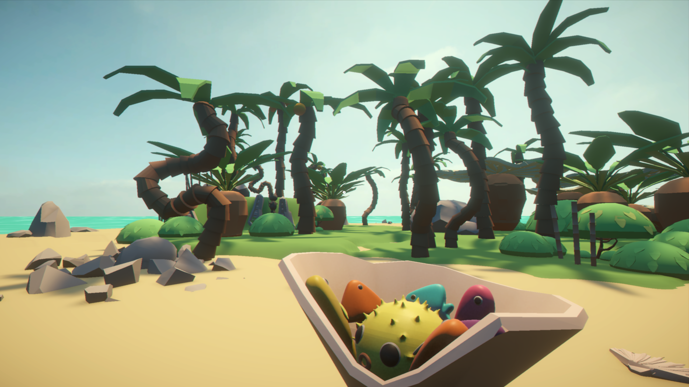
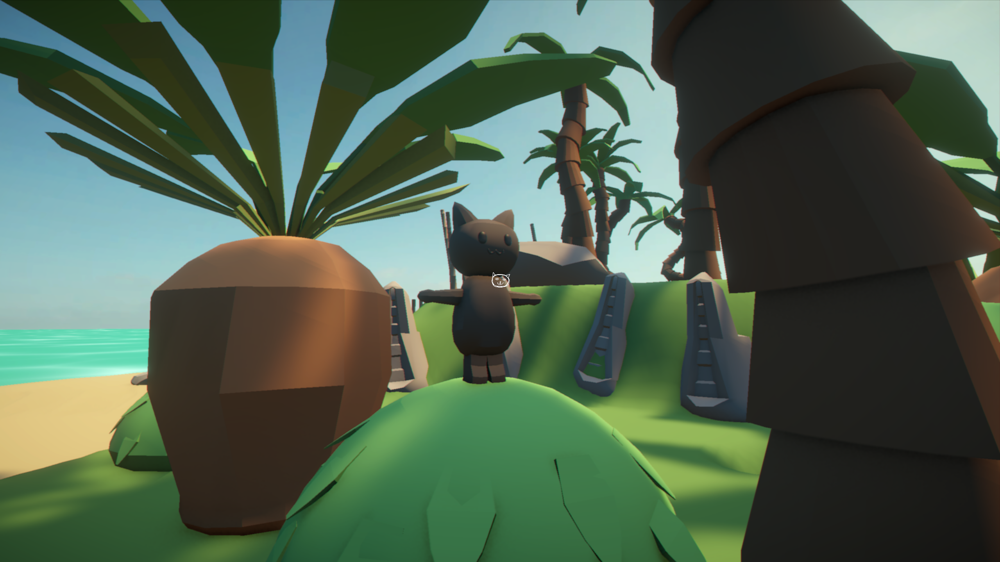
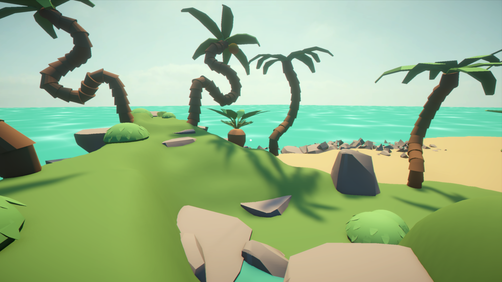
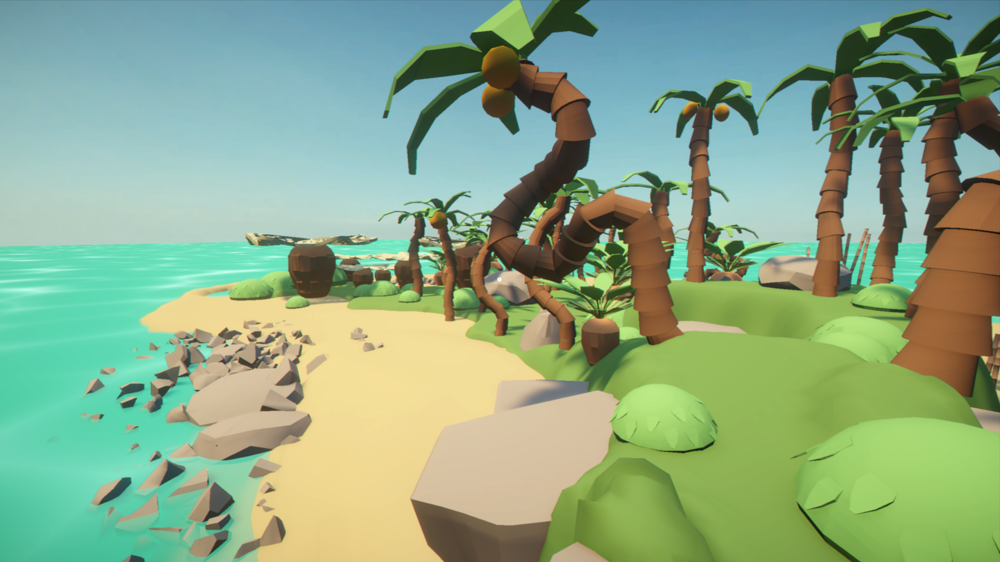
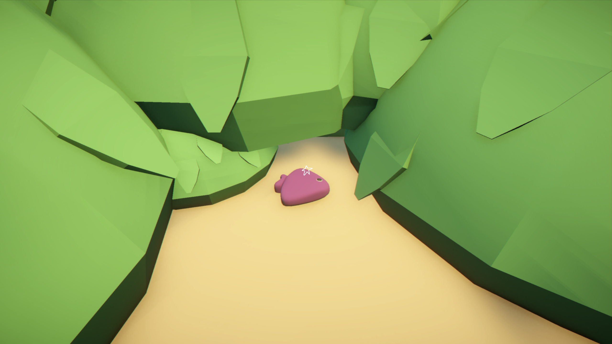

Mjav






Overview
Mjav is a short personal project made in a team of two. We made the game in 4 days. The world comprises a colorful tropical island with a playful and cozy oceanic vibe. The goal is to find all the fish hidden around the island, and then make a bouquet out of them to gift to the cat.
We put the focus on making the island feel warm and welcoming with its chill atmosphere and environment. The space is largely designed as open with multiple possible routes for the search of the tropical fish. Possible mechanics are shaking the trees to throw coconuts down to the ground, as well as petting the cat!
Role and Contributions
Level Designer, Game Designer, Programmer, 2D and 3D art, Sound Designer. I mainly worked on the island level design, the overall visual direction, scripts and the main gameplay loop. I built the entire island with a simple idea in mind: make a small environment that is easy to read and pleasant to traverse.
I also worked on a very simple fish inventory system, allowing to collect fish. That helped turn the island from just a nice scene into something with a small goal and a sense of progress. To make it feel even more alive, I made some animated objects like palm trees, and other alien-looking tropical flora. I also worked on the water shader, to try and maximize the coziness :) The main challenge was keeping the project small while still making it feel complete. I used the bird's eye views to keep checking the island composition, the object placement, and whether the environment still felt cluttered enough as we iterated on the island's size.
Finally, I also made my very first musical track that isn't an ambience! Working with virtual instruments in Bandlab, after a couple of exhausting hours I produced a lil islandy chippy tune.
Engine and Tools
Unity, Github, Gimp, Blender, Bandlab, Audacity